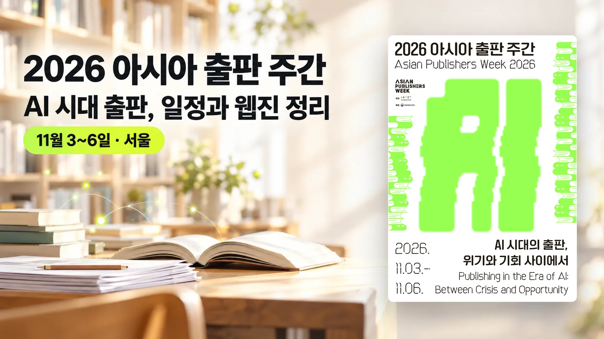

전화도 예약도 대신 하는 AI 「피클」, 설치 방법과 장단점
메시지로 부탁하면 전화·주문·예약을 대신 하는 AI 에이전트 앱 피클이 아이폰과 안드로이드에 나와 있습니다. 하는 일과 설치 순서, 요금, 앱 설명과 사용자 리뷰에 나온 한계를 정리했습니다.
노트 읽기 →분류를 눌러 필요한 자료만 모아 보실 수 있습니다. 수업 이야기는 블로그 「ezsy 이지노트」에서 이어집니다.
메시지로 부탁하면 전화·주문·예약을 대신 하는 AI 에이전트 앱 피클이 아이폰과 안드로이드에 나와 있습니다. 하는 일과 설치 순서, 요금, 앱 설명과 사용자 리뷰에 나온 한계를 정리했습니다.
노트 읽기 →한국언론진흥재단이 생성형 AI를 쓰는 10~50대 1,000명을 조사했습니다. 학업에 AI를 쓰는 학생의 72.1%는 과제를 AI에 맡기는 일이 있다고 답했습니다. 학생이 AI를 쓰는 방식과 응답자가 꼽은 대응 방안을 정리했습니다.
노트 읽기 →
앱을 깔지 않고 문자·전화로 예약과 구매를 맡기는 미국 AI 비서 인스팅트가 초대제 시험 서비스로 운영되고 있습니다. 하는 일과 시작 방법, 요금·이용 조건, 약관과 테스터 보도에 나온 한계를 정리했습니다.
노트 읽기 →생성형 AI로 만든 90분 장편 '스틸레이'가 10월 21일 개봉해 28일까지 관객 5,323명을 모았습니다. 통합전산망의 관객·매출 숫자와 먼저 나온 AI 영화들의 성적을 정리했습니다.
노트 읽기 →구글이 새 AI 모델 '제미나이 4 카본'을 공개했습니다. 지금은 일부 사이버 방어 전문가만 쓰고, 일반 공개 날짜는 정하지 않았습니다. 공개 순서와 외부 평가 점수·환각률, API 요금을 정리했습니다.
노트 읽기 →
한국출판인회의가 11월 3~6일 서울에서 'AI 시대의 출판, 위기와 기회 사이에서'를 주제로 '2026 아시아 출판 주간'을 엽니다. 날짜별 프로그램과 참가 출판인, 웹진 「아시아 출판 인사이트」에 실린 글을 정리했습니다.
노트 읽기 →분류 버튼을 누르면 분류별로 모아 볼 수 있습니다